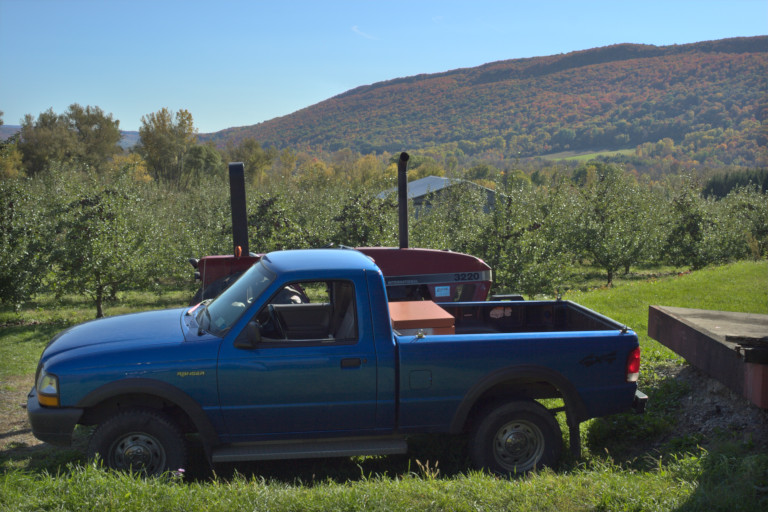
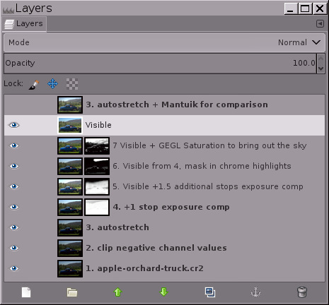
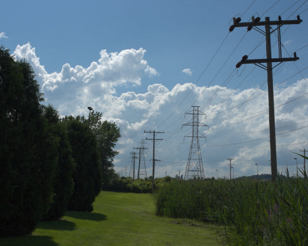
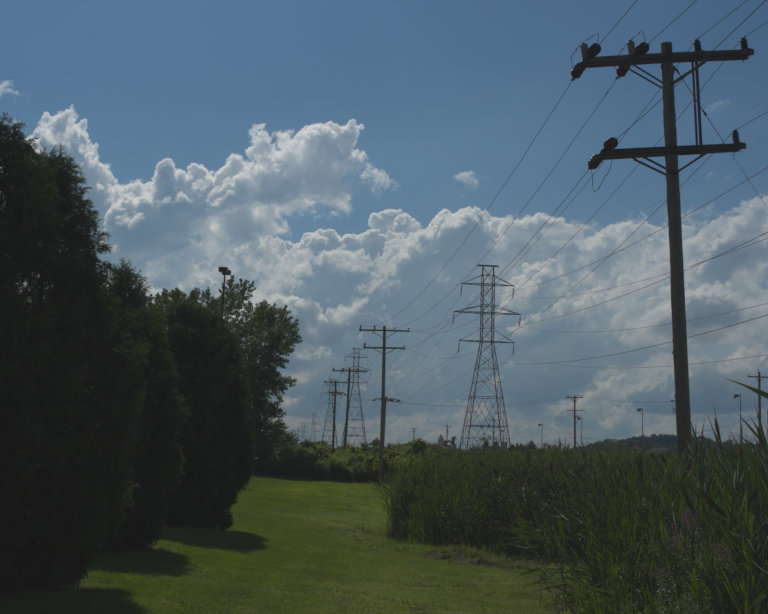
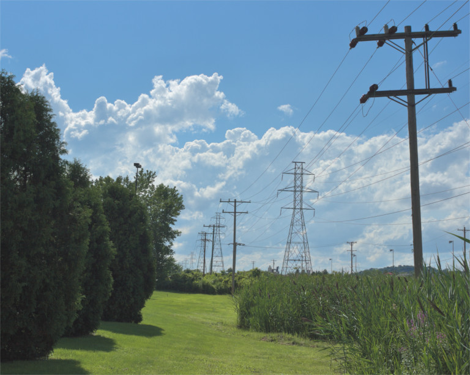
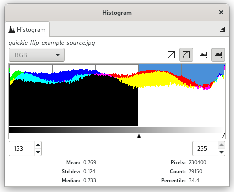
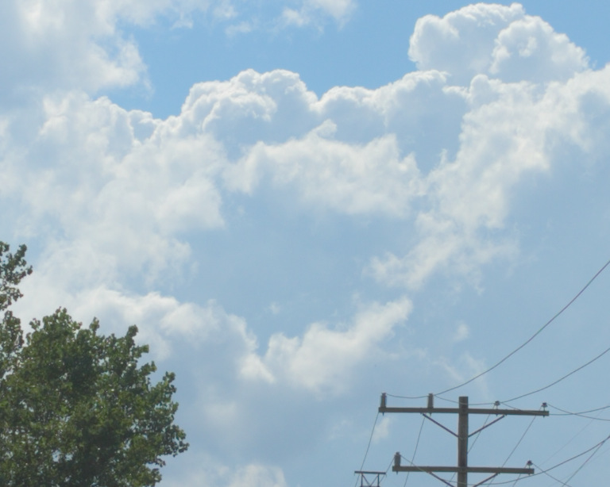

|

|
 |
| 2. Um exemplo passo-a-passo mostrando como recuperar a informação de sombras usando o ponto flutuante de grande profundidade de bits do GIMP para a operação → |

|
4. Conclusão |
Dependendo de suas intenções artísticas particulares para uma imagem, algumas imagens são mais prováveis do que outras para se beneficiarem de serem mapeadas por tom usando a operação Exposição de ponto flutuante. Seus ganhos podem variar, mas tipicamente o procedimento descrito nesta página funciona melhor para fotografias de cenas com uma diferença de tons pronunciada entre tons claros e sombras, como numa típica foto de dia ensolarado de “céu e chão”.
Para adicionar apenas uma parada de compensação de exposição positiva, o procedimento descrito nesta página funciona muito bem. Dependendo da imagem, você pode querer borrar a máscara usando um algoritmo de desfoque que respeite bordas e/ou ajustar a máscara usando a operação Exposição, Curvas, etc. Mas somente modifique a máscara após utilizar o Esticamento automático de contraste na máscara. Do contrário, os resultados podem ser imprevisíveis: Ajustes na gama produzem resultados estranhos quando realizados em valores fora da gama, e Curvas irão sumariamente cortar valores fora da gama.
Para adicionar mais de uma parada de compensação de exposição, você pode usar uma ou mais camadas de compensação de exposição positiva. De qualquer forma, a máscara de camada necessitará de ajuste cuidadoso que é bastante específico para cada imagem e para o seu resultado pretendido. A figura 7 mostra um exemplo de uso de duas camadas de compensação de exposição para adicionar duas paradas e meia de compensação de exposição às sombra e tons médios de uma imagem:
Usando os Níveis irrestritos de ponto flutuante do GIMP mais máscaras de camada para adicionar duas paradas de compensação de exposição positiva às sombras e tons médios de uma fotografia de um caminhão num pomar de maçãs que foi tirada sob um brilho solar intenso.
Figura 7
Imagem da câmera, subexposta para evitar estourar os tons claros.

Após o mapeamento de tons/recuperação de sombras usando a operação Exposição de grande profundidade de bits em ponto flutuante do GIMP.
Para comparação, o mapeamento de tons Mantuik usando as configurações padrão da GEGL.
Usando a operação Exposição em ponto flutuante do GIMP mais máscaras de camada para adicionar duas paradas e meia de compensação de exposição positiva às sombras e tons médios de uma fotografia de “sol brilhante” de um caminhão num pomar.

Uma captura de tela da pilha de camadas que usei para mapear os tons da fotografia do caminhão num pomar de maçãs. O mapeamento de tons manual dar-lhe-á controle completo sobre a imagem resultante. O mantuik e outros algoritmos de mapeamento de tons “automágicos“ demandam muito poder de processamento, são imprevisíveis e geralmente produzem resultados que não parecem naturais.
Antes de usar a operação Exposição para adicionar compensação de exposição positiva, a camada base já deveria estar estendida para o seu intervalo dinâmico máximo. O jeito mais fácil de esticar a camada base para o seu intervalo dinâmico máximo é fazendo → → e se certificar de que Manter cores está ativado.
Se você nunca usou um editor de imagens de ponto flutuante irrestrito antes, → → pode produzir um resultado inesperado: a imagem pode na verdade acabar com um intervalo dinâmico severamente reduzido, apresentando sombras mais claras ou tons claros mais escuros, ou ambos:
Antes e depois de usar → → na camada base, além da imagem final depois do mapeamento de tons utilizando → :
Figura 8
1. Imagem obtida da câmera

2. Depois de usar → → .

3. Imagem final das “Linhas de energia”.

Este arquivo bruto interpolado por referência a cena do processador PhotoFlow (o qual providencia ao GIMP um plug-in para abertura fácil de arquivos brutos) possui valores de canais RGB fora do intervalo de exibição que serão trazidos de volta para o intervalo por meio de → → .
Depois de usar → → , as sombras ficam mais claras e tons claros ficam mais escuros porque o intervalo dinâmico foi comprimido para se encaixar no intervalo de exibição. Parece que uma etapa de edição deu errado! Mas, na verdade, isto é necessário.
Aqui está a imagem “Linhas de energia” final após o mapeamento de tons do arquivo bruto interpolado por referência a cena usando o procedimento descrito neste tutorial.
Como capturado pelo arquivo bruto, essa figura de linhas de energia seguindo para o horizonte é um resultado típico de tirar uma fotografia ao meio-dia num dia de sol forte: o céu e nuvens pareceram muito bons direto da câmera, mas o chão estava muito escuro. Então, a imagem poderia se beneficiar de um mapeamento de tons para melhorar as sombras e tons médios. O primeiro passo é selecionar → → para trazer quaisquer valores de canal menores do que 0,0f ou maiores do que 1.0f de volta para o intervalo de exibição de 0,0f a 1,0f em ponto flutuante.
Fazer → → para trazer os valores de canal de volta para o intervalo de exibição não parece exatamente uma etapa de edição na direção certa para mapear os tons desta imagem em particular! Mas, de fato, é. Usar → para adicionar a compensação de exposição positiva às sombras e tons médios não funcionará se a imagem possuir valores de canal que estejam fora do intervalo de exibição.
Dispensando informações “inúteis” de sombras e tons claros: algumas vezes, arquivos brutos interpolados de fotografias de cenas com alto intervalo dinâmico acabam apresentando pixels dispersos de tons claros e sombras que essencialmente não contêm informação útil. A coisa mais fácil a fazer com tais pixels é usar a operação Exposição para definir os pontos de preto e branco desejados, e então cortar a informação resultante fora da gama do canal.
Informação inútil de tons claros: para a imagem “Linhas de energia” mostrada na Figura 8 acima, depois de aplicar → → , míseros 48 pixels ocuparam quase metade do intervalo de tons (ver o histograma à direita). Uma pequena investigação com a ferramenta Limiar do GIMP revelou que todos os 48 pixels são os valores de pico de brilhos especulares nos isolantes cerâmicos no poste de energia no plano frontal.

Em casos onde quase metade do histograma é ocupado por uma pitada de brilhos especulares, cortar os pixels é geralmente a melhor e mais fácil solução. Para a imagem “Linhas de energia”, os 48 pixels em questão carregavam, essencialmente, zero informação. Use → para subir o ponto branco, e então → para de fato cortar a informação de canal nos brilhos (desta vez, certificando-se de que a opção Cortar valores de pixel altos esteja marcada).
Informação inútil de sombras: alguns processadores de arquivos brutos podem gerar imagens com valores de canal negativos. E edições anteriores usando a grande profundidade de bits do GIMP podem ter produzido valores de canal negativos. Se fazer → → na sua camada de imagem base, torna-rá sua imagem muito mais clara nas sombras, o problema são valores de canais RGB negativos. Uma solução é utilizar → para mover o ponto preto para onde você quer que ele esteja, e então cortar os valores de canal negativos. Aqui estão dois jeitos de cortar valores de canal negativos:
Use → , certificando-se de desmarcar a opção Cortar valores de pixel altos.
Ou então, crie uma camada de preto sólido acima da sua camada de imagem base, defina o modo de mistura como “Somente clarear”, e faça uma camada “Nova a partir do visível”.
Borrando a máscara para restaurar micro contraste: colocar uma máscara invertida em uma camada que é usada para adicionar compensação de exposição positiva necessariamente achata ligeiramente o micro contraste. Dependendo de suas intenções artísticas para a imagem, você pode querer borrar a máscara para restaurar micro contraste. O problema é como borrar a máscara sem introduzir “halos” em volta das bordas de objetos na imagem. Desfoques Gaussianos com raios pequenos produzem halos pequenos mas angustiantemente óbvios em volta de bordas escuras. Um Desfoque gaussiano de raio grande funciona mas igualmente com frequência produz um halo óbvio e grande separando as porções mais claras e escuras da imagem. Para muitas imagens, uma melhor solução é borrar a máscara usando um filtro que respeite bordas, como o filtro de suavização bilateral do G'MIC para GIMP:
Adicionando compensação de exposição com e sem suavização bilateral da máscara.
Figura 9

Sem aplicar suavização bilateral à máscara, o micro contraste é achatado.
Após aplicar suavização bilateral à máscara, o micro contraste é restaurado.
Adicionar compensação de exposição combinada com uma máscara de tons de cinza invertida realmente achata o micro contraste, o que pode ou não ser desejável dependendo de suas intenções artísticas para a imagem. Para restaurar o micro contraste, tente usar um desfoque que respeite as bordas, como o filtro de suavização bilateral do G’MIC. O G’MIC para GIMP não funciona em máscaras de camada. Uma forma de contornar isso é transformar a máscara sem desfoque em uma seleção, salvar a seleção como um canal e, em seguida, arrastar o canal para a pilha de camadas para desfocar.
Um componente essencial do procedimento para usar a operação Exposição para adicionar compensação de exposição positiva a imagens com sombras e tons médios escuros precisa ser explicitamente mencionado: não apenas a operação Exposição em grande profundidade de bits do GIMP é irrestrita para a precisão em ponto flutuante — máscaras de camada também são irrestritas.
Se as máscaras em tons de cinza invertidas fossem sumariamente cortadas (como é o caso ao editar com precisão de inteiro), então o procedimento descrito neste tutorial não funcionaria.